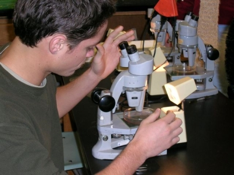
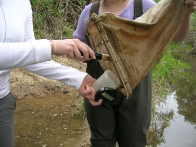
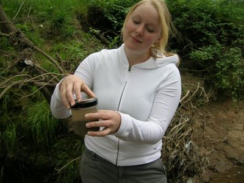
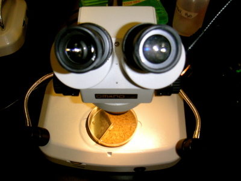

BIOLOGICAL ASSESSMENT
Biological Assessment collects and analyzes the aquatic macroinvertebrates found in the Arcade Creek in order to assess the creek's overall health.
Bio Assessment Students
examining wih the microscope
Bio Assessment Students
collecting samples
Bio Assessment Students
sample in a dish

Bio Assessment Students
sample jar
Bio Assessment Students
microscope
At each site, members collect samples of the benthic layer of the creek bed biannually. Students analyze the collected riffle samples to identify the macroinvertebrates that are found in the creek. The quantity and variety of macroinvertebrates collected are dependent on the different toxicities of the water. As macroinvertebrates are critical in the food chain of the Arcade Creek, the presence or absence of macroinvertebrate taxa indicate the health of the creek.
Macroinvertebrates serve as a major link between autotrophs and heterotrophs; they consume algae and bacteria that are on the lower end of the food chain, and are prey for larger organisms like fish. In addition, the wide variety of species of macroinvertebrates allows students to more accurately identify fluctuations in population as responses to stressors, such as changes in sediment or introduction of organic pollutants and toxicants.
Biological Assessment works most closely with the studies Bio Assay, Chemistry and Sediments to identify these instigators for change and to observe the trends in the health of the creek.